〇、如何开始
群里刚发时你有点懵，一时不知从何看起。头歌上给了三份资料，你依次下载了下来：
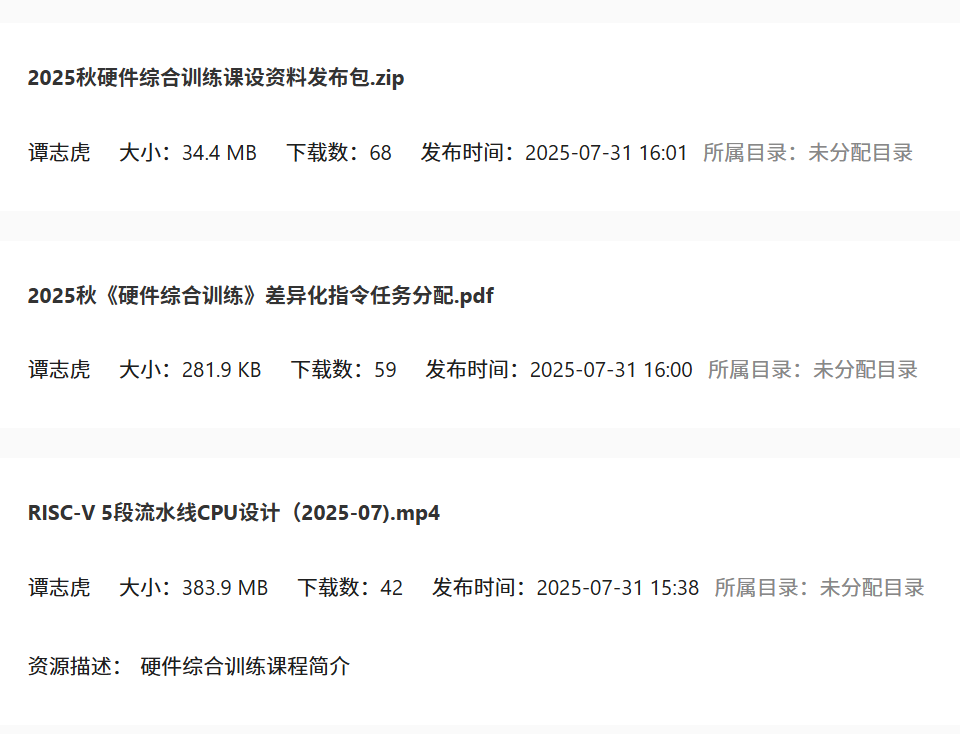
你决定首先观看视频，视频里详细讲了课程要求，重要的包括以下部分：
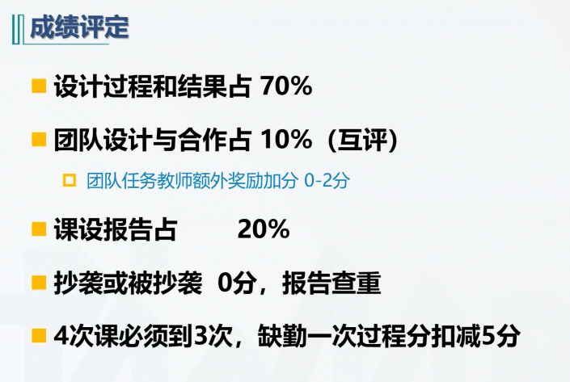
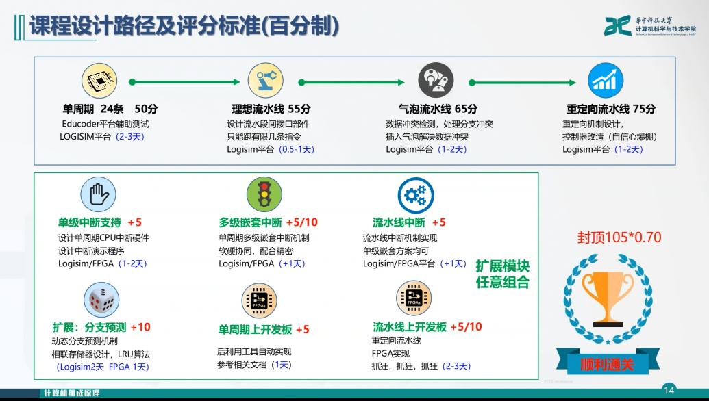
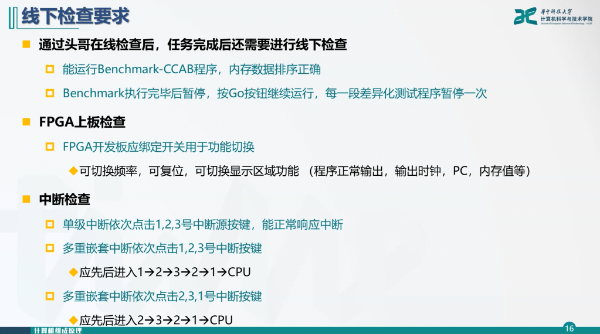
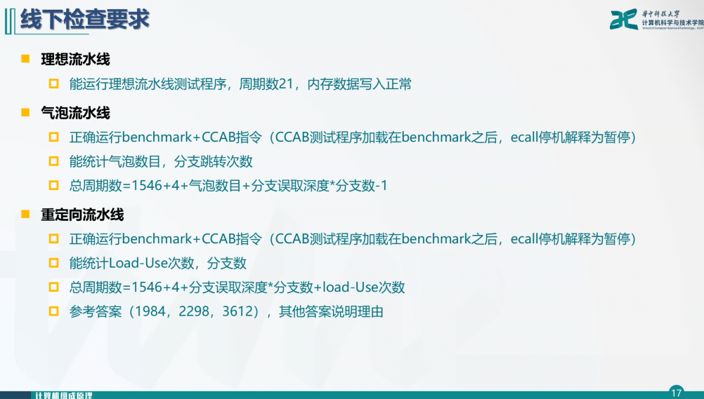
然后你看 2025秋《硬件综合训练》差异化指令任务分配.pdf，找到了自己的 CCAB编号。但是，你不知道 CCAB是啥，那是因为你没看 硬件综合训练课程设计任务书.pdf：
在 CCAB 扩展指令集中支持 2 条 C 类运算指令，1 条 M 类存储指令，1条 B 类分支指令，具体任务每位同学不一样，指令编号详见见公文包中的任务分配；
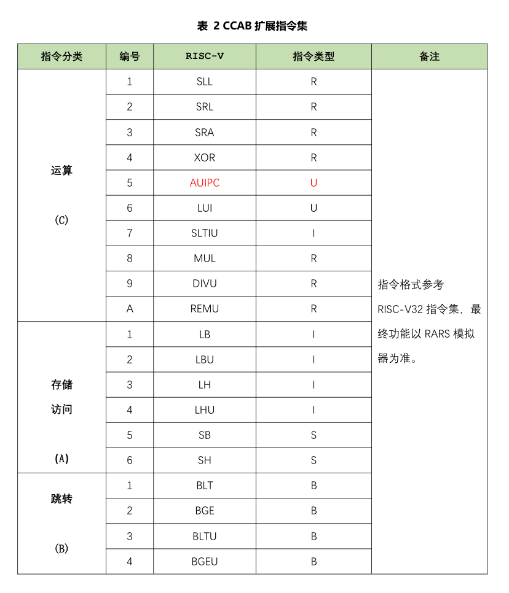
你觉得既然是拓展任务，那不必一开始就做，做完标准指令集后再回头也不迟。
好了，现在你打开了 2025秋硬件综合训练课设资料发布包.zip，发现了 cpu21-riscv文件夹内有实验电路模板，你打开模板观察了一下，你知道：空心方块代表你要完成的电路，实心方块是课程提供的模块.

你看了一下头歌第一关,是RISC-V单周期CPU,正好也是第一个电路.
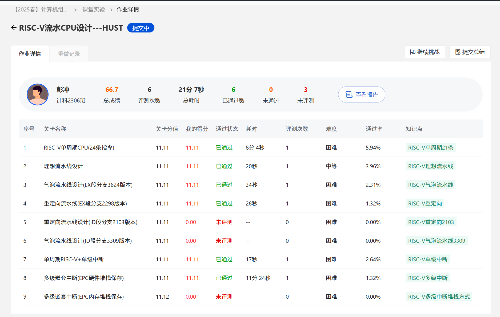
你打开第一关看了一下，觉得似曾相识，因为组原实验的MIPS单周期CPU跟这几乎一样。你开始回忆组员实验内容依稀记得什么R型、J型、I型…还有一堆Excel表格…
你决定找一些ppt回顾一下，发现压缩包里有 (6)中央处理器RISC-V v3.0.pptx，你迅速点开，看到了RISC-V指令格式的指令格式，发觉缺少阐述性内容。
你试图去找课程录屏，没找到。再翻一下压缩包，发现RISC-V指令集手册里包含了riscv中英文手册，以及 RISC-V指令系统.ppt。
感性告诉你，读手册最为全面和权威；理性告诉你，ppt更容易掌握。
你打开了ppt，通读一遍，收益匪浅。又打开了中文手册，发现了几张有用的插图：
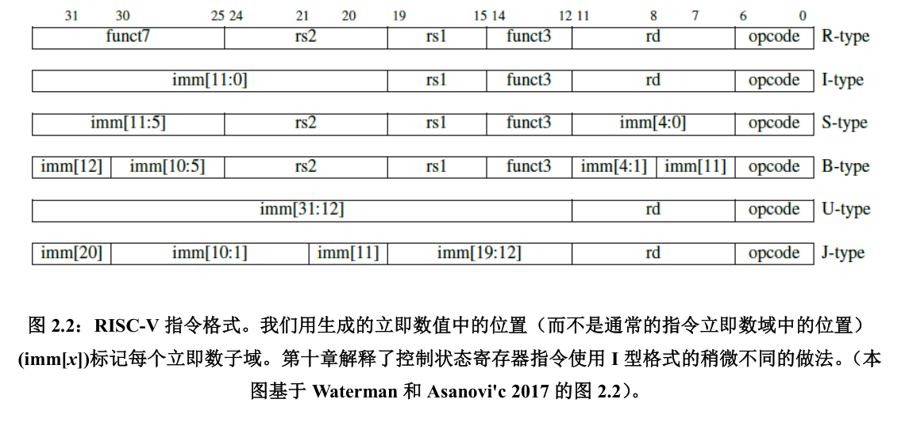
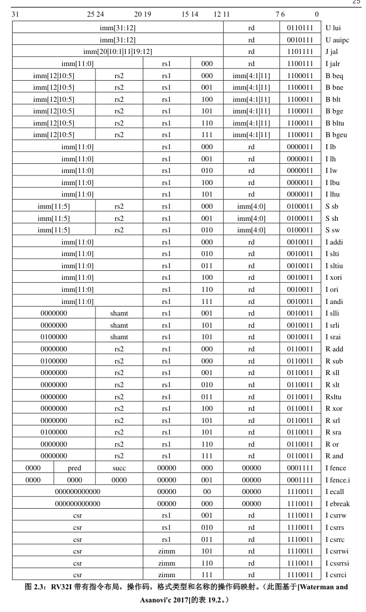
你觉得差不多了，你回归任务书，观察并思考基本指令集内容，回忆每条指令的执行过程。
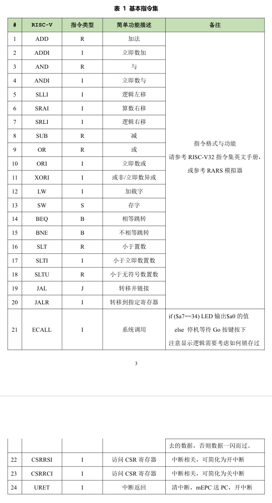
你打开电路，看到了中间的黑线，你以为是总线，但你发现错了，这是专用数据通路模型。你恍然大悟，怪不得只给了一个Excel表，只要设计硬布线控制器就好，微码、时序啥的都不需要。
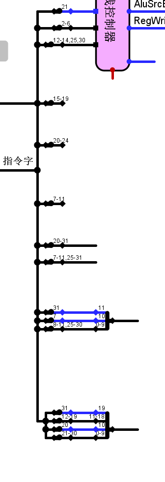
你观察IR黑线上的分叉，上面三个分叉输入到控制器中。紧接着是15-19，你看了下表，知道是代表 rs1，20-24代表rs2，7-11代表 rd，20-31代表I型指令的imm(立即数)，以此类推，下面三个分别是S、B、J型指令的立即数。你知道，rs1、rs2、rd肯定跟寄存器堆文件相连。下面几个立即数呢？你查了下指令手册，I和S的立即数用来参与运算，因此会和ALU相连；B和J的立即数用来跳转的，最后肯定跟PC相关。
你继续努力，画出来了电路图